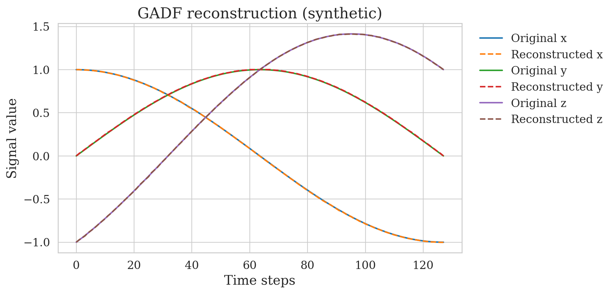

ONION-FL / SYSTEM VIEWSOURCE ↗
CLOUD coordinator
FOG A aggregatorFOG B aggregator
EDGE 01EDGE 02EDGE 03EDGE 04
Edge → Fog → CloudHierarchical federated learning
SIMULATORMQTTLIVE MONITOR
Backend and data platforms in production. Federated learning and time-series research in the lab. I like bringing both worlds together.
A federated-learning system I built, and a real figure from my time-series reconstruction research.

A selection of engineering challenges and research directions. Some work is proprietary; the ideas and technical decisions are what I can share.
Multi-provider IoT integrations, resilient ETL pipelines and backend services that connect fragmented real-world systems.
Studying information loss and reconstruction across temporal image representations, with reproducible decoding benchmarks.
A hierarchical framework and simulator for studying federated learning across edge, fog and cloud nodes.
Maintaining containerized platforms, CI/CD workflows, routing and observability for client-facing services.
A voice and text assistant for account insights that keeps model interpretation separate from deterministic services and user-authorised actions.
↳ More experiments and technical notes are on the way. This is a curated selection, not an exhaustive project log.
I enjoy problems that don't fit neatly into a single job title.
Building maintainable microservices and connectors that turn varied APIs, devices and platforms into dependable products.
TypeScript / NestJS / Python / REST / RabbitMQMaking heterogeneous data useful through ingestion, ETL, time-series storage and analytics workflows.
ETL / IoT / MySQL / MongoDB / InfluxDB / AzureDeploying and operating containerised services with repeatable delivery, reliable routing and observability.
Docker / Kubernetes / GitLab CI/CD / Traefik / GrafanaInvestigating federated learning at the edge and rigorous methods for representing and reconstructing time series.
PyTorch / Federated Learning / Time Series / Edge ComputingHey, I'm Adriano. I'm a software engineer who likes being close to both the problem and the solution.
At INNOVASUR, I work across client requirements, backend and data integrations, and production operations. I’ve delivered more than 50 integrations for 100+ clients, and contribute to infrastructure supporting 200+ clients.
I hold an M.Sc. in Computer Engineering from the University of Granada and collaborate with the MYDASS research group on federated learning and time-series research. I enjoy connecting practical engineering with careful experimentation.
UNIVERSITY OF GRANADA · MSc COMPUTER ENGINEERINGENGLISH C1 · SPAIN
Interested in engineering, applied research or collaborating on something ambitious? I'd love to hear about it.